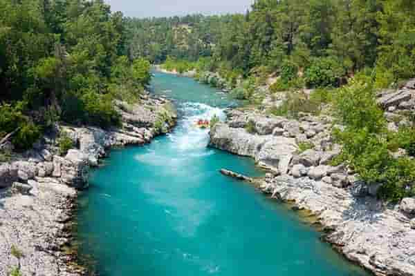
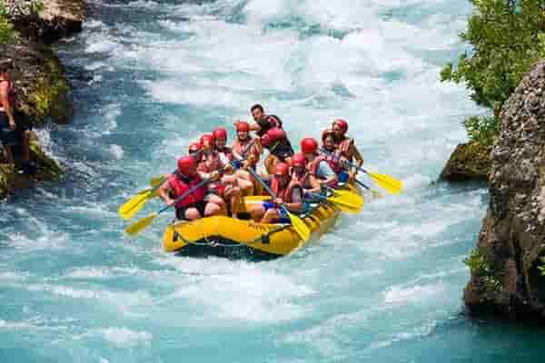
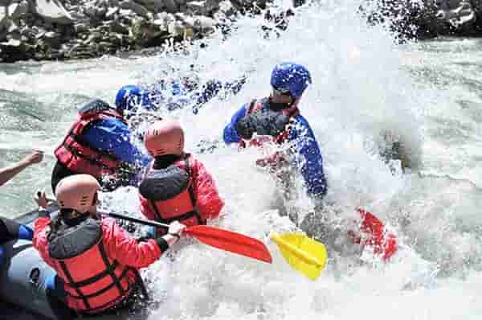

Sink or Swim Safaris
Are you ready for CANYON RUSH?!
Your journey begins with a comprehensive safety briefing before launching straight into the "Devil’s Bathtub"—a churning drop that demands instant teamwork. Next, you will conquer the "Mile of Mud," a continuous stretch of technical wave trains, tight boulder slaloms, and heart-pounding vertical drops. After a riverside buffet lunch in a calm canyon pool, you will face the ultimate finale: "The Meat Grinder," a roaring Class V rapid flanked by sheer, 500-foot granite walls.

Or maybe you just want to feel your RAPID PULSE?

After a quick gear check, you will push off directly into "The Pulse," a rapid-fire sequence of continuous Class III waves that sets a thrilling pace. You will need quick reflexes to navigate the swirling eddies of "Cyclone Eddy" before entering the narrow granite gates of "The Chute." The trip finishes with a dramatic splash through "Widowmaker," a sudden four-foot drop that guarantees everyone in the raft gets wet.
Take the family on WHITEOUT DASH!
Your adventure kicks off with a relaxed float where you can practice your paddling strokes in calm water. The excitement builds as you approach "Screaming Yeti," a bouncy, splashy Class III rapid that offers big fun without high risk. You will stop mid-way at a sandy river beach for a relaxing riverside picnic lunch. The day wraps up with "The Zipper," a long, wavy stretch of rolling water that will keep everyone smiling all the way to the take-out point.

| Trip Name | Intensity | Duration | Distance | Minimum Age |
|---|---|---|---|---|
| Canyon Rush | High (Class IV-V) | 6 Hours | 14 Miles | 16 Years Old |
| Rapid Pulse | Medium-High (Class III-IV) | 3 Hours | 7 Miles | 14 Years Old |
| Whiteout Dash | Medium (Class II-III) | 4 Hours | 9 Miles | 8 Years Old |
| Hydro Glide | Low (Class I-II) | 2.5 Hours | 5 Miles | 5 Years Old |
| Slick Rock Sprint | High (Class IV) | 4 Hours | 10 Miles | 15 Years Old |